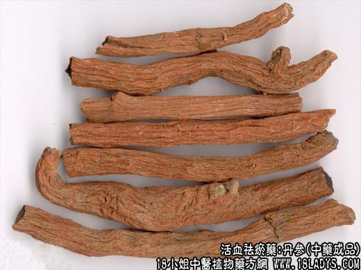

原文连接:https://www.daquan.com/post/1989.html
_丹参的作用与功效0.png)

【中药概述】
丹参，别名：赤参、紫丹参、红根、活血根、红参、血参根、朵朵花根、红丹参、拟丹参、奔马草、郄蝉草、逐马、烧酒壶根、野苏子根、紫花拟丹参、蜂糖罐、蜜罐头、靠山红、大红炮、山参，为唇形科草本植物丹参的根茎。苦，微寒。归心、心包、肝经。
1．活血祛瘀：用于瘀血阻滞的痛经、经闭、产后腹痛等，如（丹参散）；用于症瘕积块及由瘀血所致的肢体疼痛等，如（<医宗金鉴>丹参饮）。
2．凉血消痈：用于疮疡肿痛、热痹疼痛等，如（消乳汤、通脉汤）。
3．养血安神：用于心烦不眠，怔忡等，如（清营汤、天王补心丹）。
【药物形态】
本品根茎短粗，顶端有时残留茎基。根数条，长圆柱形，略弯曲，有的分枝并具须状细根，长10～20cm，直径0.3～lcm。表面棕红色或暗棕红色，粗糙，具纵皱纹。老根外皮疏松，多显紫棕色，常呈鳞片状剥落。质硬而脆，断面疏松，有裂隙或略平整而致密，皮部棕红色，木部灰黄色或紫褐色，导管束黄白色，呈放射状排列。气微，味微苦涩。栽培品较粗壮，直径0.5～1.5cm。表面红棕色，具纵皱纹，外皮紧贴不易剥落。质坚实，断面较平整，略呈角质样。
【药效鉴别】本品活血化瘀即可调经、通脉、止痛，逐瘀即有助于生新，故前人有“一味丹参散，功同四物汤”之说。
【临证应用】 1.（<医学金鉴>丹参饮：丹参30g，檀香，砂仁5g）活血祛瘀，行气止痛，用于血瘀气滞，心胃诸痛；2.（<中华人民共和国药典>复方丹参片）用治胸中憋闷，心绞痛。
【应用与配伍】
1．用于妇女月经不调，痛经，经闭，产后瘀滞腹痛。本品功能活血化瘀，善调妇女经水，为妇科要药。《妇人明理论》有“一味丹参散，功同四物汤”之说。可单味为末，酒调服；亦常配当归、川芎、益母革等同用，以加强疗效。现代临床还常以本品为主，治子宫外孕：若急性期腹腔内大量出血者，配赤芍、桃仁；若慢性期腹腔内血液已凝成包块者，更加三棱、莪术。
2．用于血瘀之心胸、脘腹疼痛及漱瘕积聚，风湿痹痛等。本品为活血化瘀之要药，广泛用于各种瘀血证。治胸痹心痛，脘腹疼痛，常配檀香、砂仁等同用，如《医学金针》丹参饮。临床上治冠心病心绞痛，常配降香、川芎、红花等同用，亦可单用，如以本品提取物制成的丹参舒冠片。治漱瘕积聚，常配三棱、莪术以祛瘀消旗。治风湿痹痛，则配防风、秦艽等祛风湿药同用。
3．用于疮疡痈肿。本品性寒凉血，又能活血，有清瘀热以消痈肿之功。常配银花、连翘等清热解毒药同用。
4．用于热病烦躁神昏及杂病心悸心眠等。本品能凉血安神，治热病邪入心营，配生地、黄连、
竹叶：治杂病血不养心，心火偏旺之心悸失眠，则配生地、酸枣仁、柏子仁等。近代临床还以本品治缺血性中风、动脉粥样硬化、病毒性心肌炎、慢性肝炎、肝硬化，以及防治支气管哮喘、慢性肺心病等，均有一定疗效。
【药理作用】
1．对心、脑血管系统的影响：
（1）对心脏的作用丹参注射液能使豚鼠及家兔离体心脏的心率减慢，心收缩力先有短暂的抑制，而后逐渐加强。亦能使麻醉犬的心率减慢。
（2）对血管和血压的作用丹参煎剂、丹参注射液、白花丹参注射液给麻醉犬或兔静注，均显示不同程度的降压作用。
（3）对冠脉流量的影响麻醉犬或猫，静滴丹参注射液3～4g／kg，冠脉流量明显增加，冠脉阻力明显下降，但心肌耗氧量有所增加。（4）对心肌缺血和心肌梗死的作用对垂体后叶素引起的家兔或大鼠急性心肌缺血，丹参煎剂、复方丹参（丹参、降香）注射液、丹参素能改善或对抗其心电的异常。
（5）对脑循环及脑缺血的影响用动物模型观察丹参对家兔软脑膜微循环作用，结果表明丹参可使血流速度增快，流态改善，红细胞有不同程度解聚。丹参对缺血后脑组织有明显的保护作用，使缺血后脑组织及线粒体、粗面内质网等超微结构的改变明显减轻，丹参水溶性成分迷达香酸有温和的抗血栓形成作用。
（6）对心肌、脑组织能量代谢的作用以生物发光法测定结果，丹参注射液225～450mg（生药）／只腹腔注射，可使小鼠心肌、脑中ATP含量明显增加，有利于能量代谢和氧效应的调节。
（7）对心和脑Na十、K＋-ATP酶的抑制作用丹参酮ⅡA磺酸钠在体外能可逆性抑制大鼠心、脑微粒体Na＋、K十-ATPm，并具有浓度依赖性，且对心微粒体Na十、K十-ATP酶的抑制作用较强。降低Na十或ATP浓度则增强或减弱其抑酶作用。
（8）对微循环的影响高分子右旋糖酐造成外周微循环障碍的家兔，丹参注射液3g（生药）／kg静注，可使眼球结膜微循环血流速度显著加快，毛细血管网开放数目增多，600A以上动物的血液流态改善，如血细胞有不同程度的分聚现象，血液流动有粒状或断线状变为正常。
2．对血脂和动脉粥样硬化的作用丹参煎剂灌胃对动脉粥样硬化家免，可降低血和肝中的甘油三酷。丹参及白花丹参能抑制家兔实验性冠状动脉大分支粥样斑块的形成。
3．对血液系统的影响
（1）抗凝血、促纤溶作用动物实验表明，丹参具有抗内、外凝血系统的功能，可使复钙时间（RT）、凝血酶原时间（PT）及白陶土部分凝血激酶时间（KPTT）延长，并促进纤维蛋白降解。
（2）抑制血小板聚集和抗血栓形成丹参注射液可抑制ADP诱导的兔血小板聚集；使血小板粘附降低；对体外血栓形成有抑制作用和抑制凝血功能。
（3）对红细胞膜的作用。
（4）对红细胞与内皮细胞粘附特性的影响。
4．对耐缺氧能力的作用。
5．对免疫功能的影响100％丹参煎剂0.5ml／只灌胃，连续7日，能使小鼠巨噬细胞吞噬百分率和吞噬指数明显提高，即可增强小鼠巨噬细胞吞噬功能，溶血空斑试验结果表明，脾脏抗体生成数（PFC）／106脾细胞值明显提高。
6．抗炎及抗过敏作用。
7．对肝脏的作用。 此外，尚可提高肝糖原，降低肝脂肪含量，促进RNA、DNA的生成，说明丹参口服液对肝细胞代谢及促进受损肝细胞的再生均产生有益作用。
8．抗胃溃疡作用。
9．对胆汁分泌的影响。
10．对肿瘤的影响100％丹参煎剂灌胃，可延长艾氏（Ehrlich）腹水癌小鼠的存活时间。用琼脂平板法证实丹参对小鼠艾氏腹水癌有抗肿瘤效应。
此外，丹参具有抑制体外试验中备组织的环腺苷酸磷酸二酯酶（PDE）的活力，尤以脑和肺的抑制最为敏感，推测大脑皮层的抑制作用可能是通过抑制PDE的活力，增加环腺苦酸（cAMP）水平而实现的。
【化学成分】含多种丹参酮，丹参酸、丹参酚、鼠尾草酚、维生素类A，E等。
【用量用法】5——15g，水煎服，或入丸、散剂。
【使用注意】
妇女月经过多及无瘀血者禁服；孕妇慎服；本品反藜芦（诸参辛芍叛藜芦）。
1.《本草经集注》：“畏碱水，反藜芦。”
2.《本草经疏》：“妊娠无故，勿服。”
3.《药品辨义》：“忌醋。”
4.《本经逢原》：“大便不实者忌之。”
5.《药性切用》：“血虚无瘀者勿用。”
6.《重庆堂随笔》：“行血宜全用，入心宜去梢用。”
本文解释权归介绍中草药名称的中药大全所有，本文地址：https://www.daquan.com/post/1989.html